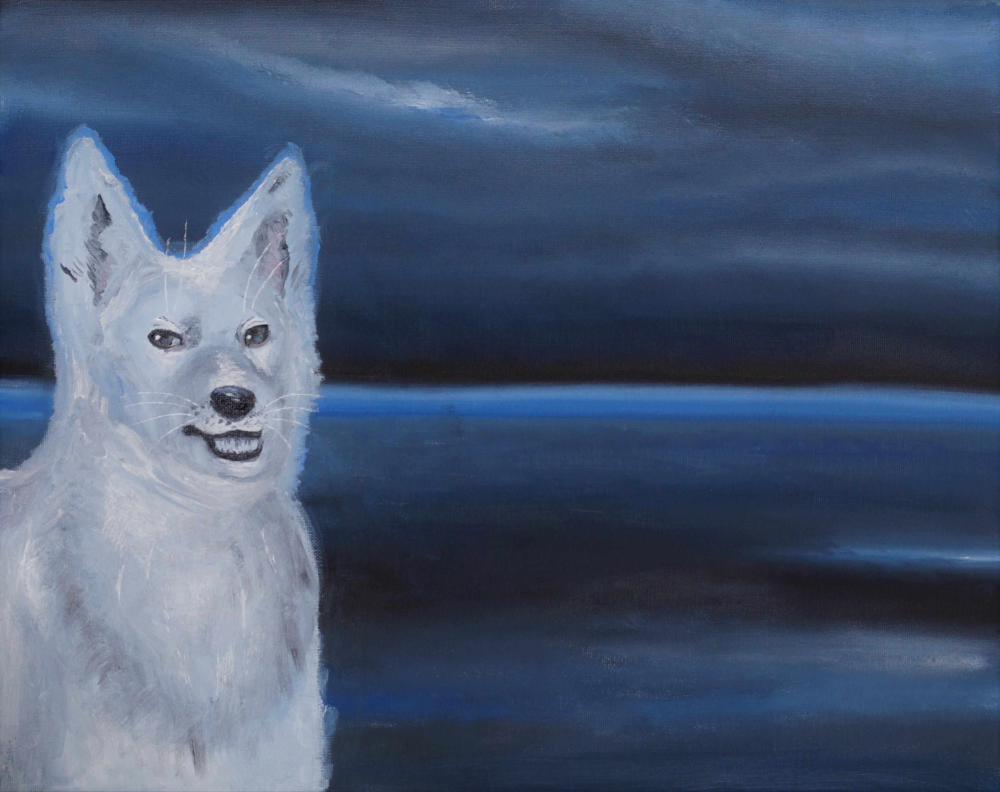
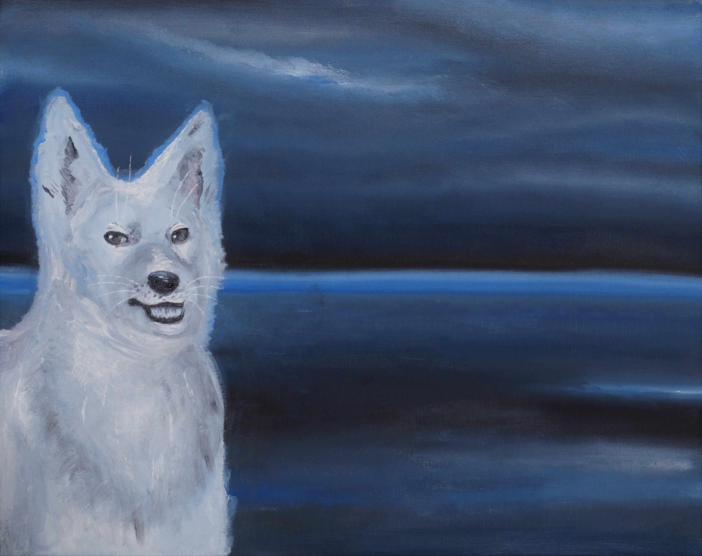
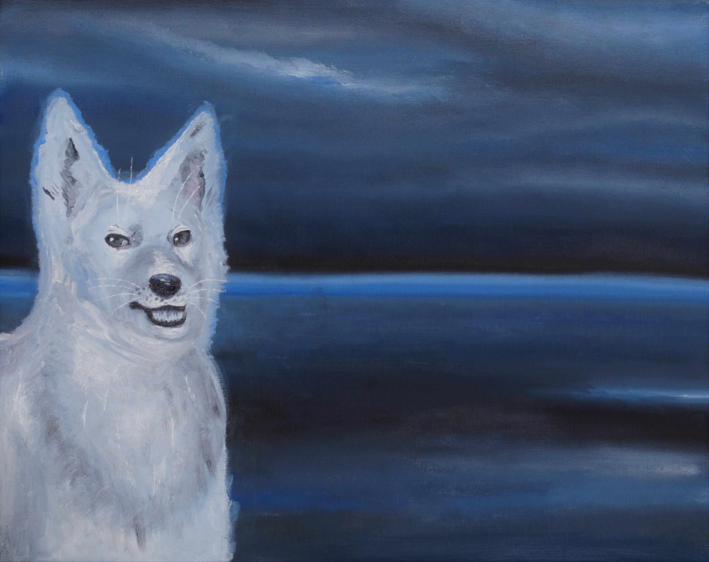

Галерея
Обо мне
Улыбающийся пёс

08.11.22 Холст на картоне 40х50, масло
Я рисовала множество различных сюжетов и однажды поняла, что еще ни разу не
писала маслом свою любимую собаку. Фотографируя Тима, у меня получилась
интересная фотография. Во время съемки пес зевал, и на итоговом изображении это
выглядело так, будто он по-человечески улыбался. Это вдохновило меня на создание
картины с необычным сюжетом.
И вновь морской пейзаж. Синие оттенки с легким мистическим свечением. Белый пес
загадочно улыбается, обрамленный синим светом. Его взгляд зловещий и озорной
одновременно. Кажется, будто он вот-вот заговорит со зрителем.
 

 08.11.22 Холст на картоне 40х50, масло
Я рисовала множество различных сюжетов и однажды поняла, что еще ни разу не
08.11.22 Холст на картоне 40х50, масло
Я рисовала множество различных сюжетов и однажды поняла, что еще ни разу не